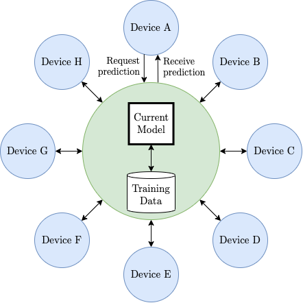
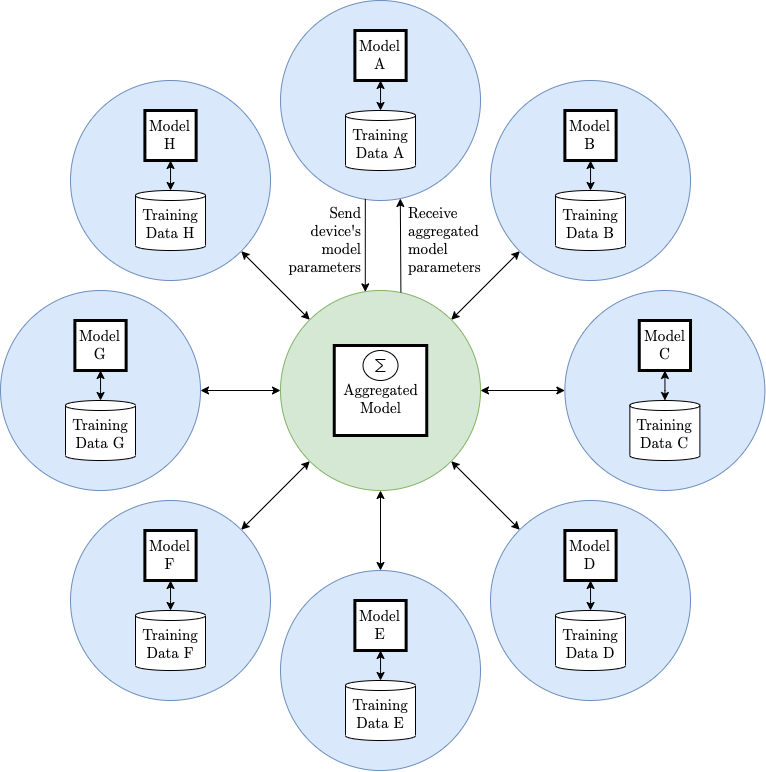

Intro to My Research
Testing images…
Federated Deep Learning on Quantum Computers
Welcome to my blog about my undergraduage honors computer science research! I am excited to start working this summer in preparation for my senior year at William & Mary.
Brief Summary
Many edge devices, such as cell phones, contribute to and require feedback from a shared deep learning algorithm hosted on a server. For example, Siri, Next-Word-Prediction, and other messaging apps include auto-complete features that attempt to finish users’ words or sentences. Such features make it necessary to share user information (the typed message) with an exterior algorithm (predicting how the message might end). This scenario raises communication efficiency and privacy issues. For example, messages are too bulky to constantly send back and forth from the server that hosts the machine learning algorithm. Also, many users may not want their messages shared directly with the server, because they become vulnerable to privacy leaks.

Federated learning, a recently discovered method of on-device machine learning, potentially mitigates these problems. Instead of communicating directly with the server, each edge device downloads its personal copy of the machine learning algorithm. The algorithms learn from their respective users and provide quick results without consulting with exterior servers. Then, on a more periodic basis, the edge devices send their altered algorithms back to the server to update the parent algorithm. The new parent algorithm is redownloaded to each edge device, and the cycle continues.

Our research attempts to augment this federated system. We propose a framework that addresses current concerns with on-device machine learning. We intend to design a quantum computing implementation that reduces and encrypts shared data and accelerates the learning process. Our objective is to:
- achieve communication efficiency via quantization or sparcification so that fewer parameters need to be transmitted back to the aggregating computer,
- encrypt or protect the transmitted models via homomorphic encryption or differential privacy, so that the aggregating server does not know any individual model, and
- design quantum computing implementation of the deep learning training algorithm with the consideration of communication efficiency and security.
Final Product
The deliverable will be a paper that discusses the efficacy of a trial implementation of an enhanced federated learning system. This report will contribute to the nascent body of literature devoted to on-device machine learning.
Anticipated timeline
| Summer | June | Literature review |
| July | Literature review; Implement model | |
| August | Literature review; Implement model | |
| Fall Semester | September | Implement model |
| October | Test & revise model | |
| November | Test & revise model | |
| December | Test & revise model | |
| Spring Semester | January | Test & revise model; Produce report |
| February | Test & revise model; Produce report | |
| March | Test & revise model; Produce report | |
| April | Finalize report | |
| May | Finalize report |
The Plan
This summer I intend to complete a thorough literature review on relevant topics. In particular, I will focus on quantum computing, federated learning, knowledge distillation, and current models of on-device machine learning. I also hope to write a survey paper on current uses of quantum computing in this research area.
As I work, I will keep the blog updated with my latest discoveries. My goal is to show continual progress throughout the duration of the summer and to provide a platform that allows people to learn concurrently.
Thank you for reading this intro! If you have any questions or ideas for my research, please reach out to me.